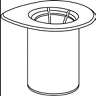
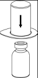
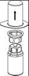
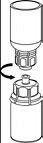
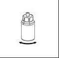
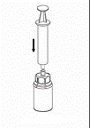

RÉSUMÉ DES CARACTÉRISTIQUES DU PRODUIT
ANSM - Mis à jour le : 29/12/2014
FIBROGAMMIN 62,5 UI/ml, poudre et solvant pour solution injectable/perfusion
2. COMPOSITION QUALITATIVE ET QUANTITATIVE
Facteur XIII de coagulation humain...................................................................................................... 62,5 UI
correspondant à une quantité totale en protéines de 6 à 16 mg/ml.
Flacons contenant 250 UI de Facteur XIII de coagulation humain après reconstitution avec 4 ml et 1250 UI après reconstitution avec 20 ml.
Excipients :
Sodium (sous forme de chlorure et hydroxyde) : 2,78 à 4,36 mg/ml (120 à 189 mmol/l).
Pour la liste complète des excipients, voir rubrique 6.1.
Poudre et solvant pour solution injectable/perfusion.
La poudre est blanche.
4.1. Indications thérapeutiques
Traitement et prophylaxie des hémorragies et des troubles de la cicatrisation chez les patients atteints de déficit congénital en facteur XIII.
4.2. Posologie et mode d'administration
Posologie
1 ml correspond à 62,5 UI et 100 UI est équivalent à 1,6 ml, respectivement.
Important
La quantité à administrer et la fréquence d’administration doivent toujours être déterminées en fonction de l’efficacité clinique dans chaque cas individuel.
Prophylaxie des hémorragies :
10 UI par kg de poids corporel environ une fois par mois. L’intervalle peut être raccourci si des hémorragies spontanées se développent.
Avant intervention chirurgicale :
Jusqu’à 35 UI par kg de poids corporel, renouveler l’injection si nécessaire pour atteindre un taux de facteur XIII approprié. L’efficacité est maintenue par des injections répétées jusqu’à cicatrisation complète.
Traitement des hémorragies :
10-20 UI par kg de poids corporel une fois par jour ; pour les hémorragies sévères et les hématomes extensifs jusqu’à l’arrêt du saignement.
En raison des différentes pathogenèses des déficits en facteur XIII, les données disponibles sur les durées de vie varient considérablement. C’est pourquoi, il est recommandé de surveiller l’augmentation de l’activité facteur XIII par un dosage du facteur XIII. Dans le cas d’une chirurgie majeure et d’hémorragies sévères, l’objectif est de maintenir un taux normal.
L’expérience chez les enfants est limitée.
Mode d’administration
Reconstituer le produit comme décrit au paragraphe « Reconstitution » (voir rubrique 6.6 « Précautions particulières d’élimination et de manipulation »). Avant administration, la préparation doit être amenée à la température ambiante ou corporelle. Injecter ou perfuser le produit par voie intraveineuse, lentement, à un débit confortable pour le patient. Le débit d’injection ou de perfusion ne doit pas dépasser 4 ml par minute.
Surveiller le patient à la recherche d’une éventuelle réaction immédiate. En cas de survenue d’une réaction paraissant liée à l’administration de FIBROGAMMIN, le débit de perfusion devra être ralenti ou la perfusion interrompue, selon l’état clinique du patient.
Hypersensibilité à la substance active ou à l'un des excipients.
4.4. Mises en garde spéciales et précautions d'emploi
Chez les patients présentant des antécédents d’allergies au produit (associés à des symptômes tels que urticaire généralisée, rash, chute de la pression sanguine, dyspnée), des antihistaminiques et des corticoïdes peuvent être administrés en prophylaxie.
En cas de thromboses récentes, des précautions doivent être prises en raison de l’effet stabilisant de la fibrine.
Après des traitements répétés par FIBROGAMMIN, en l’absence de réponse clinique ou si le taux de facteur XIII n’atteint pas le niveau prévu, il est indispensable de rechercher la présence d’inhibiteur du facteur XIII (anticorps neutralisant le facteur XIII). Il faut alors démontrer la présence dans le plasma et le titrer à l’aide de tests biologiques appropriés.
Remarque à l’attention des patients sous régime hyposodé :
FIBROGAMMIN contient 5,07 à 7,97 mmol (ou 116,6 à 183,2 mg) de sodium par dose (poids corporel 75 kg) si une dose journalière maximale de 35 UI/kg de poids corporel (2625 UI = 42 ml) est administrée. Ceci est à prendre en compte chez les patients suivant un régime hyposodé strict.
Sécurité virale
Les mesures habituelles de prévention du risque de transmission d’agents infectieux par les médicaments préparés à partir de sang ou de plasma humain comprennent la sélection clinique des donneurs, la recherche des marqueurs spécifiques d’infection sur chaque don et sur les mélanges de plasma et l’inclusion dans le procédé de fabrication d’étapes efficaces pour l’inactivation/élimination virale. Cependant, lorsque des médicaments préparés à partir de sang ou de plasma humain sont administrés, le risque de transmission d’agents infectieux ne peut pas être totalement exclu. Ceci s’applique également aux virus inconnus ou émergents ou à d’autres types d’agents infectieux.
Les mesures prises sont considérées comme efficaces contre les virus enveloppés tels que le virus de l'immunodéficience humaine (VIH), le virus de l’hépatite C (VHC) et le virus de l’hépatite B (VHB), et contre les virus non enveloppés tels que le virus de l’hépatite A (VHA) et parvovirus B19.
Une vaccination appropriée (hépatites A et B) des patients recevant des facteurs de coagulation (dont FIBROGAMMIN) est recommandée.
4.5. Interactions avec d'autres médicaments et autres formes d'interactions
Aucune interaction du facteur XIII de coagulation humain avec d'autres médicaments n'est connue.
Chez l’animal, aucune étude de reprotoxicité n’a été réalisée avec Fibrogammin.
Les données cliniques sont rassurantes mais encore limitées.
L’efficacité de FIBROGAMMIN chez la femme enceinte atteinte de déficit congénital en facteur XIII a été décrite.
Compte tenu du bénéfice thérapeutique, l’utilisation de Fibrogammin est envisageable si nécessaire au cours de la grossesse et de l’allaitement.
4.7. Effets sur l'aptitude à conduire des véhicules et à utiliser des machines
Aucun effet sur l'aptitude à conduire des véhicules et à utiliser des machines n'a été observé.
Très fréquent : > 1/10
Fréquent : > 1/100 et <1/10
Peu fréquent : > 1/1 000 et <1/100
Rare : > 1/10 000 et <1/1 000
Très rare : < 1/10 000 (dont cas isolés)
Affections du système immunitaire
Rarement des réactions allergiques-anaphylactiques (telles que urticaire généralisé, rash, chute de la pression sanguine, dyspnée) ont été observées.
Dans de très rares cas, le développement d’inhibiteurs dirigés contre le facteur XIII peut survenir.
Troubles généraux et anomalies au site d’administration
Dans de rares cas, une augmentation de la température corporelle a été observée.
Si une réaction allergique-anaphylactique survient, l’administration de FIBROGAMMIN doit être immédiatement interrompue (par arrêt de l’injection) et un traitement approprié doit être initié. Les standards habituels de traitement de l’état de choc doivent être suivis.
Pour les informations relatives à la sécurité virale, voir rubrique 4.4 « Mises en garde spéciales et précautions d’emploi ».
Déclaration des effets indésirables suspectés
La déclaration des effets indésirables suspectés après autorisation du médicament est importante. Elle permet une surveillance continue du rapport bénéfice/risque du médicament. Les professionnels de santé déclarent tout effet indésirable suspecté via le système national de déclaration : Agence nationale de sécurité du médicament et des produits de santé (ANSM) et réseau des Centres Régionaux de Pharmacovigilance - Site internet: www.ansm.sante.fr.
Les conséquences d'un surdosage sont inconnues.
5. PROPRIETES PHARMACOLOGIQUES
5.1. Propriétés pharmacodynamiques
Classe pharmacothérapeutique : Antihémorragiques.
Code ATC : B02B D07
Le facteur XIII relie le groupe aminé de la lysine à la glutamine par le biais de sa fonction enzymatique (activité transamidase) conduisant ainsi à la création d’un réseau de molécules de fibrine. Le réseau de fibrine et sa stabilisation favorisent la pénétration de fibroblastes et confortent la cicatrisation.
5.2. Propriétés pharmacocinétiques
Dans le déficit congénital en facteur XIII, la demi-vie biologique de FIBROGAMMIN a été évaluée à 9,2 jours (médiane). FIBROGAMMIN est métabolisé de la même façon que le facteur XIII de coagulation endogène.
Le produit est administré par voie intraveineuse et est de ce fait immédiatement biodisponible conduisant à une concentration plasmatique correspondante à la dose administrée.
5.3. Données de sécurité préclinique
Les protéines contenues dans FIBROGAMMIN sont issues du plasma humain et agissent comme des protéines plasmatiques humaines. L'analyse de la toxicité à dose unique chez l'animal n'a pas révélé de potentiel toxique de FIBROGAMMIN.
Aucune étude de toxicité dose-répétée, de mutagenèse, cancérogenèse ou de reprotoxicité n'a été réalisée.
Albumine humaine, glucose, chlorure de sodium, acide chlorhydrique ou hydroxyde de sodium pour ajustement du pH.
FIBROGAMMIN ne doit pas être mélangé avec d'autres médicaments ou solvants, à l'exception de ceux mentionnés dans la rubrique 6.6., et doit être administré par une ligne de perfusion séparée.
D'un point de vue microbiologique, le produit reconstitué doit être utilisé immédiatement. S'il n'est pas administré immédiatement, la durée de conservation ne doit pas dépasser 8 heures entre 2°C et 8°C, à moins que la reconstitution ait été réalisée sous conditions aseptiques validées et contrôlées.
6.4. Précautions particulières de conservation
A conserver au réfrigérateur (entre 2°C et 8°C). Ne pas congeler. Conserver le flacon dans l'emballage extérieur à l'abri de la lumière.
Pour les conditions de conservation du médicament reconstitué, voir rubrique 6.3.
6.5. Nature et contenu de l'emballage extérieur
poudre en flacon (verre de type I) muni d’un bouchon (bromobutyl), un cerclage (aluminium) et un opercule (plastique) + 4 ml de solvant en flacon (verre de type I) de 6 ml muni d’un bouchon (chlorobutyl) + dispositif de transfert 20/20 avec filtre – boîte de 1.
Flacon de 1250 UI :
poudre en flacon (verre de type I) muni d’un bouchon (bromobutyl), un cerclage (aluminium) et un opercule (plastique) + 20 ml de solvant en flacon (verre de type I) de 25 ml muni d’un bouchon (chlorobutyl) + un dispositif de transfert 20/20 avec filtre – boîte de 1.
Toutes les présentations peuvent ne pas être commercialisées.
6.6. Précautions particulières d’élimination et de manipulation
· La solution doit être claire ou légèrement opalescente. Après filtration/prélèvement (voir ci-dessous) le produit reconstitué doit être inspecté visuellement afin de mettre en évidence la présence de particules ou un changement de coloration avant administration.
· La reconstitution et le prélèvement doivent être faits sous conditions aseptiques.
· N’utilisez pas de solutions troubles ou contenant des résidus (dépôts/particules).
Reconstitution
Amener le solvant à température ambiante. Retirer les capuchons protecteurs des flacons de produit et de solvant et nettoyer les bouchons avec une solution antiseptique puis laisser sécher avant l’ouverture de l’emballage du Mix2vial.
|
1 |
1. Ouvrir l’emballage du dispositif Mix2Vial en retirant l’opercule. N'enlevez pas le Mix2Vial de l’emballage.
|
|
2 |
2. Placer le flacon de solvant sur une surface plane et propre et le maintenir fermement. En tenant le dispositif Mix2Vial à travers son emballage, pousser l’extrémité bleue tout droit à travers le bouchon du flacon de solvant.
|
|
3 |
3. Retirer avec précaution l’emballage du dispositif Mix2Vial en tenant les bords et en tirant verticalement vers le haut. Bien s’assurer que vous avez seulement retiré l’emballage et que le dispositif Mix2Vial est bien resté en place.
|
|
4 |
4. Poser le flacon de produit sur une surface plane et rigide. Retourner l’ensemble flacon de diluant-dispositif Mix2Vial et pousser la partie transparente de l’adaptateur tout droit à travers le bouchon du flacon de produit. Le solvant coule automatiquement dans le flacon de poudre.
|
|
5 |
5. En maintenant la partie produit reconstitué d’une main et la partie solvant de l’autre, séparer les flacons en dévissant le dispositif Mix2Vial. Jeter le flacon de solvant avec la partie bleue attachée de l’adaptateur Mix2Vial.
|
|
6 |
6. Agiter délicatement le flacon de produit avec la partie transparente de l’adaptateur attaché dessus jusqu’à ce que la substance soit totalement dissoute. Ne pas secouer.
|
|
7 |
7. Remplir d’air une seringue stérile vide. Tout en maintenant verticalement le flacon de produit reconstitué, connecter la seringue au Luer Lock du dispositif Mix2Vial. Injecter l’air dans le flacon de produit.
|
Prélèvement et administration
|
8 |
8. Tout en maintenant le piston de la seringue appuyé, retourner l’ensemble et prélever la solution dans la seringue en tirant lentement sur le piston. |
|
9 |
9. Une fois la solution transférée dans la seringue, tenir le corps de la seringue fermement (en maintenant le piston de la seringue dirigé vers le bas) et déconnecter la partie transparente de l’adaptateur Mix2Vial de la seringue. |
Veiller à ce que du sang ne pénètre pas dans la seringue remplie de produit en raison d'un risque de coagulation dans la seringue et d'administration de caillots de fibrine au patient.
Dans le cas où des volumes importants de FIBROGAMMIN sont nécessaires, il est possible d’utiliser plusieurs flacons de FIBROGAMMIN pour une seule perfusion via un dispositif de perfusion disponible dans le commerce.
La solution de FIBROGAMMIN ne doit pas être diluée.
La solution reconstituée doit être administrée par une ligne d’injection/perfusion dédiée par injection intraveineuse lente, sans dépasser la vitesse de perfusion recommandée de 4 ml par minute.
Tout produit non utilisé ou déchet doit être éliminé conformément à la réglementation en vigueur.
7. TITULAIRE DE L’AUTORISATION DE MISE SUR LE MARCHE
CSL BEHRING GMBH
EMIL VON BEHRING STRASSE 76
35041 MARBURG
ALLEMAGNE
8. NUMERO(S) D’AUTORISATION DE MISE SUR LE MARCHE
· 575 416-9 ou 34009 575 416 9 9: poudre en flacon (verre de type I) muni d'un bouchon (caoutchouc), un cerclage (aluminium) et un opercule (plastique) + 4 ml de solvant en ampoule (verre de type I) - boîte de 1.
· 575 417-5 ou 34009 575 417 5 0: 1 poudre (verre de type I) muni d'un bouchon (caoutchouc), un cerclage (aluminium) et un opercule (plastique) + 20 ml de solvant en flacon (verre de type II) avec un dispositif de transfert - boîte de 1.
9. DATE DE PREMIERE AUTORISATION/DE RENOUVELLEMENT DE L’AUTORISATION
[à compléter par le titulaire]
10. DATE DE MISE A JOUR DU TEXTE
[à compléter par le titulaire]
Sans objet.
12. INSTRUCTIONS POUR LA PREPARATION DES RADIOPHARMACEUTIQUES
Sans objet.
Liste I.
Médicament soumis à une prescription initiale hospitalière de six mois (les établissements de transfusion sanguine autorisés à dispenser des médicaments dérivés du sang aux malades qui y sont traités, inclus).
La délivrance est réservée aux pharmacies à usage intérieur des établissements de santé ou aux établissements de transfusion sanguine pour les malades qui y sont traités.